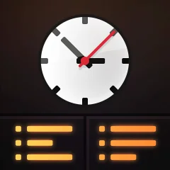
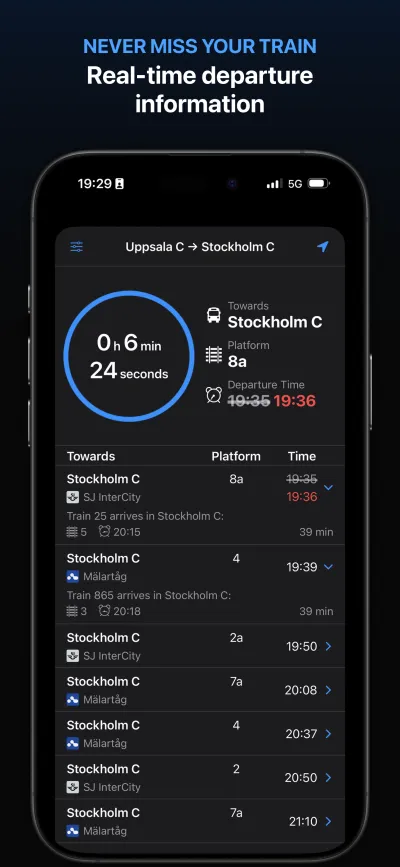
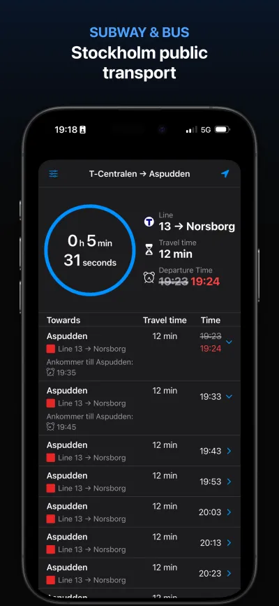
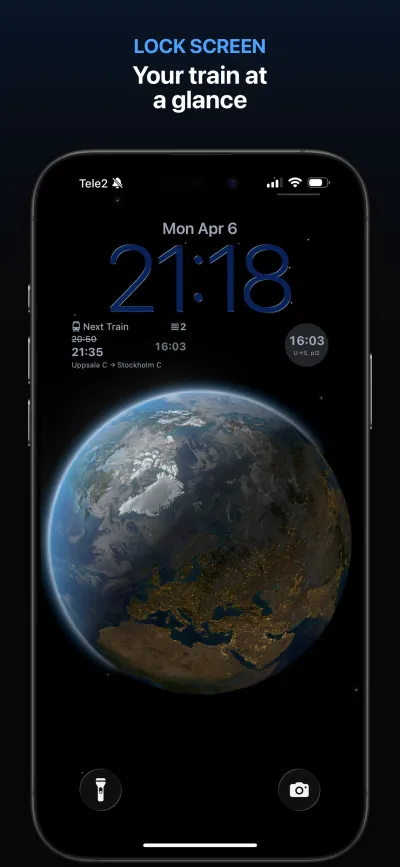
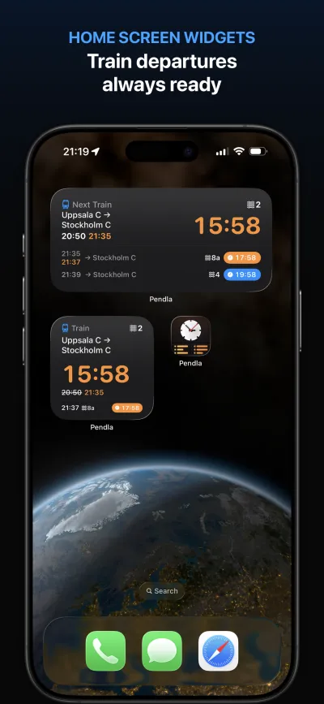

Never miss your train.
Real-time train, metro, and bus departures across Sweden. At a glance on your iPhone, Apple Watch, Home Screen, and Lock Screen.





See it in action.
A quick look at the Pendla experience.
App preview video showing Pendla in action: real-time departures, widgets, and Apple Watch complications.
Download all screenshots
Built for every surface.
Pendla meets you where you are — on your wrist, your Lock Screen, your Home Screen, and in-app.
Apple Watch
Full SwiftUI Watch app with 4 complication families. Real-time countdown timers on every watch face — circular, rectangular, corner, and inline.
Home Screen & Lock Screen
WidgetKit widgets in 5 sizes. Small and medium for the Home Screen, plus circular, rectangular, and inline for your Lock Screen and StandBy.
Accessible to everyone
Full VoiceOver support with localized labels and hints across all surfaces. Dynamic Type. Every departure, delay, and cancellation is announced clearly.
Location-aware
Smart Core Location integration automatically surfaces your nearest station. Minimal location use — Always authorization only requested when widgets are active.
Train, metro, and bus
Real-time data from Trafikverket (national trains across all of Sweden) and SL (Stockholm metro and bus). All transit modes, one app.
Powered by Apple technologies.
Built natively with the latest frameworks and APIs.
The story behind Pendla
Built by a daily commuter, for daily commuters.
Pendla was born from a simple frustration: no Swedish transit app offered a truly accessible, glanceable commute experience. As a daily train commuter and indie iOS developer, I wanted my next departure on my watch face, my Lock Screen, and my Home Screen — without opening an app.
More importantly, I wanted it to be accessible to everyone. Every surface in Pendla — from Watch complications to Lock Screen widgets — has full VoiceOver support with localized labels in both Swedish and English.
Pendla is a one-person passion project proving that small indie apps can deliver the same polish and platform integration as large teams.